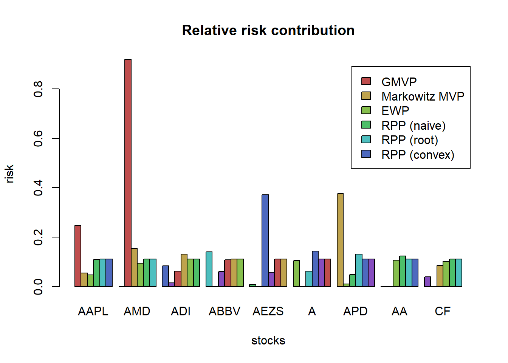

Chapter 4 Portfolio optimization
ADD Overview of this chapter
4.1 Mean-variance portfolio
We start the section by recalling the math optimization problem of Mean-variance portfolio (MVP).
\[\begin{array}{ll} \underset{\mathbf{w}}{\textsf{maximize}} & \mathbf{w}^{T}\boldsymbol{\mu}-\lambda\mathbf{w}^{T}\boldsymbol{\Sigma}\mathbf{w}\\ \textsf{subject to} & \mathbf{1}^T\mathbf{w}=1 \end{array}\]
This is a convex quadratic problem (QP) with only one linear constraint which admits a closed-form solution:
\[\mathbf{w}_{\sf MVP} = \frac{1}{2\lambda}\boldsymbol{\Sigma}^{-1}\left(\boldsymbol{\mu}+\nu\mathbf{1}\right)\] where \(\nu\) is the optimal dual variable \(\nu=\frac{2\lambda-\mathbf{1}^{T}\boldsymbol{\Sigma}^{-1}\boldsymbol{\mu}}{\mathbf{1}^{T}\boldsymbol{\Sigma}^{-1}\mathbf{1}}\).
There are two alternative obvious reformulations for Markowitz’s portfolio.
Maximization of mean return:
\[\begin{array}{ll} \underset{\mathbf{w}}{\textsf{maximize}} & \mathbf{w}^{T}\boldsymbol{\mu}\\ \textsf{subject to} & \mathbf{w}^{T}\boldsymbol{\Sigma}\mathbf{w}\leq\alpha\\ & \mathbf{1}^{T}\mathbf{w}=1. \end{array}\]
Minimization of risk:
\[\begin{array}{ll} \underset{\mathbf{w}}{\textsf{minimize}} & \mathbf{w}^{T}\boldsymbol{\Sigma}\mathbf{w}\\ \textsf{subject to} & \mathbf{w}^{T}\boldsymbol{\mu}\geq\beta\\ & \mathbf{1}^{T}\mathbf{w}=1. \end{array}\]
By sweeping over \(\alpha\), \(\beta\), or\(\lambda\), one can recover the whole Pareto optimal curve.
The previous three problems result in the same mean-variance trade-off curve (Pareto curve):
TODO add frontier curve here
4.1.1 Practical constraints
\[\begin{array}{lll} \underset{\mathbf{w}}{\textsf{maximize}} & \mathbf{w}^{T}\boldsymbol{\mu}-\lambda\mathbf{w}^{T}\boldsymbol{\Sigma}\mathbf{w} & \\ \textsf{subject to} & \mathbf{w}^{T}\mathbf{1}=1 & \text{budget}\\ & \mathbf{w}\ge\mathbf{0} & \text{no shorting}\\ & \left\Vert \mathbf{w}\right\Vert _{1}\leq\gamma & \text{leverage}\\ & \left\Vert \mathbf{w}-\mathbf{w}_{0}\right\Vert _{1}\leq\tau & \text{turnover}\\ & \left\Vert \mathbf{w}\right\Vert _{\infty}\leq u & \text{max position}\\ & \left\Vert \mathbf{w}\right\Vert _{0}\leq K & \text{sparsity} \end{array}\]
K controls the cardinality of the portfolio (to select a small set of stocks from the universe) .Without the sparsity constraint, the problem can be rewritten as a QP.
Interestingly, the MVP formulation can be interpreted as a regression. (could also view it as a replicating problem trying to #TODO see uppal's lecture)
The key observation is that the variance of the portfolio can be seen as an L2-norm error term
\[\begin{array}{ll} \underset{\mathbf{w},\rho}{\textsf{minimize}} & \|\mathbf{R}\mathbf{w} - \rho\mathbf{1}\|^2 - \frac{1}{\lambda}\rho\\ \textsf{subject to} & \rho = \mathbf{w}^T\boldsymbol{\mu}\\ & \mathbf{1}^T\mathbf{w}=1\\ \end{array}\]
Intuitively, this reformulation is trying to achieve the expected return ρ with minimum variance in the L2-norm sense.
4.2 Maximum Sharpe ratio portfolio (MSRP)
\[\begin{array}{ll} \underset{\mathbf{w}}{\textsf{maximize}} & \dfrac{\mathbf{w}^{T}\boldsymbol{\mu}-r_{f}}{\sqrt{\mathbf{w}^{T}\boldsymbol{\Sigma}\mathbf{w}}}\\ \textsf{subject to} & \mathbf{1}^{T}\mathbf{w}=1, \quad\left(\mathbf{w}\geq\mathbf{0}\right) \end{array}\]
However, this problem is not convex! This problem belong to the class of fractional programming (FP) with many methods available for its resolution. Or rewrite in convex form as
\[\begin{array}{ll} \underset{\tilde{\mathbf{w}}}{\textsf{minimize}} & \tilde{\mathbf{w}}^T\mathbf{\Sigma}\tilde{\mathbf{w}}\\ {\textsf{subject to}} & \tilde{\mathbf{w}}^T\boldsymbol{\mu} = 1\\ & \tilde{\mathbf{w}}\ge\mathbf{0} \end{array}\]
4.3 Risk based portfolio
Risk-based portfolios try to bypass the high sensitivity of Markowitz’s mean-variance portfolio to the estimation errors of the expected returns by not making use of the expected returns altogether. They are based only on the covariance matrix (Ardia, Boudt, and Gagnon Fleury 2017).
4.3.1 Global minimum variance portfolio (GMVP)
\[\begin{array}{ll} \underset{\mathbf{w}}{\textsf{minimize}} & \mathbf{w}^{T}\boldsymbol{\Sigma}\mathbf{w}\\ \textsf{subject to} & \mathbf{1}^T\mathbf{w}=1, \;\mathbf{w}\geq\mathbf{0}. \end{array}\]
\[\mathbf{w}_{\sf GMVP}=\frac{1}{\mathbf{1}^{T}\boldsymbol{\Sigma}^{-1}\mathbf{1}}\boldsymbol{\Sigma}^{-1}\mathbf{1}\]
4.3.2 Inverse volatility portfolio (IVP)
\[\mathbf{w} = \frac{\boldsymbol{\sigma}^{-1}}{\mathbf{1}^T\boldsymbol{\sigma}^{-1}}\] where \(\boldsymbol{\sigma}^2 = {\sf Diag(\boldsymbol{\Sigma})}\)
IVP is also called “equal volatility” portfolio since the weighted constituent assets have equal volatility. Also, IVP ignores the asset correlations.
\[{\sf sd}(w_ir_i) = w_i\sigma_i = 1/N\]
4.3.3 Risk parity portfolio (RPP) or equal risk portfolio (ERP)
The risk parity portfolio (RPP) or equal risk portfolio (ERP) aims at equalizing the risk contribution from the invested assets in the global portfolio risk.
4.3.4 Most diversified portfolio (MDP)
If markets are risk-efficient, then investments will produce returns in proportion to their total risk (measured by volatility)
The diversification ratio (DR) was defined analogous to the Sharpe ratio (SR): \[\mathsf{DR} = \frac{\mathbf{w}^{T}\boldsymbol{\sigma}}{\sqrt{\mathbf{w}^{T}\boldsymbol{\Sigma}\mathbf{w}}}\]
\[\begin{array}{ll} \underset{\mathbf{w}}{\textsf{maximize}} & \dfrac{\mathbf{w}^{T}\boldsymbol{\sigma}}{\sqrt{\mathbf{w}^{T}\boldsymbol{\Sigma}\mathbf{w}}}\\ \textsf{subject to} & \mathbf{1}^{T}\mathbf{w}=1. \end{array}\]
4.3.5 Maximum decorrelation portfolio (MDCP)
The maximum decorrelation portfolio (MDCP) is closely related to GMVP and MDP, but applies to the case where an investor believes all assets have similar returns and volatility, but heterogeneous correlations.
\[\begin{array}{ll} \underset{\mathbf{w}}{\textsf{minimize}} & \mathbf{w}^{T}\mathbf{C}\mathbf{w}\\ \textsf{subject to} & \mathbf{1}^{T}\mathbf{w}=1 \end{array}\] where \(\mathbf{C} \triangleq \mathsf{Diag}(\boldsymbol{\Sigma})^{-1/2}\boldsymbol{\Sigma}\mathsf{Diag}(\boldsymbol{\Sigma})^{-1/2}\)
The MDCP happen to
- maximize the DR when all assets have equal volatility and
- maximize the SR when all assets have equal risks and returns.
4.4 Comparison
TODO Write functions/backtesting to
deal with multiple datasets
used a training data window to design the portfolio
evaluation on a rolling-window basis
Comparison of MVP, GMVP, IVP, MSRP, MDP, MDCP, as well as the previous heuristic portfolios (EWP, quintile portfolio, and GMRP) with the constraint: long-only.
from <- "2016-01-01"
to <- "2020-10-30"
tickers <- c("AAPL", "AMD", "ADI", "ABBV", "AEZS", "A", "APD", "AA","CF")
assign_variable_global_env(tickers, from, to, ratio=0.7)
T_trn <- round(0.7*nrow(X_lin))
mu <- colMeans(X_log_trn)
Sigma <- cov(X_log_trn)
w_EWP <- EWP(X_log_trn)
w_QuintP <- quintileP(X_log_trn)
w_GMRP <- GMRP(mu)
w_MVP <- MVP(mu, Sigma, lmd=2, long_only = TRUE)
w_MSRP <- MSRP(mu, Sigma)
w_GMVP <- GMVP(Sigma, long_only = TRUE)
w_IVP <- IVP(Sigma)
w_MDP <- MDP(Sigma)
w_MDCP <- MDCP(Sigma)
w_heuristic <- cbind("EWP" = w_EWP,
"QuintP" = w_QuintP[, "QuintP (mu/sigma)"],
"GMRP" = w_GMRP)
w_Markowitz <- cbind("MVP" = w_MVP,
"GMVP" = w_GMVP,
"IVP" = w_IVP,
"MSRP" = w_MSRP,
"MDP" = w_MDP,
"MDCP" = w_MDCP)w_all <- cbind(w_heuristic, w_Markowitz)
barplot(w_all, col = rainbow10equal[1:9], legend = rownames(w_all), beside = TRUE,
main = "Portfolio allocation", xlab = "portfolios", ylab = "weights")
# compute returns of all portfolios
ret_all <- xts(X_lin %*% w_all, index(X_lin))
ret_all_trn <- ret_all[1:T_trn, ]
ret_all_tst <- ret_all[-c(1:T_trn), ]
# performance
t(table.AnnualizedReturns(ret_all_trn)) %>% as.data.frame() %>% arrange(-`Annualized Sharpe (Rf=0%)`)
#> Annualized Return Annualized Std Dev Annualized Sharpe (Rf=0%)
#> MVP 0.4598 0.2602 1.7669
#> MSRP 0.3503 0.1996 1.7552
#> QuintP 0.6297 0.3758 1.6754
#> GMRP 0.9717 0.6913 1.4055
#> GMVP 0.2152 0.1577 1.3642
#> IVP 0.2458 0.1862 1.3199
#> EWP 0.3019 0.2430 1.2426
#> MDP 0.2683 0.2202 1.2183
#> MDCP 0.3235 0.3523 0.9182
t(table.AnnualizedReturns(ret_all_tst)) %>% as.data.frame() %>% arrange(-`Annualized Sharpe (Rf=0%)`)
#> Annualized Return Annualized Std Dev Annualized Sharpe (Rf=0%)
#> GMRP 1.0621 0.5763 1.8428
#> QuintP 0.6561 0.4111 1.5959
#> MVP 0.5087 0.3714 1.3697
#> MSRP 0.4316 0.3468 1.2444
#> GMVP 0.2992 0.3197 0.9357
#> IVP 0.2029 0.3319 0.6114
#> MDP 0.0976 0.3437 0.2838
#> EWP 0.0782 0.3658 0.2138
#> MDCP -0.1131 0.4374 -0.2585We can observe that:
as expected, the MSRP achieves the maximum ex ante (in-sample) Sharpe ratio; however, this is not maintained ex post (out-of-sample); as expected, the EWP achieves the best ex post performance; the MVP performs poorly; other top performers include the IVP and MDP.
{ chart.CumReturns(ret_all, main = "Cumulative return of portfolios",
wealth.index = TRUE, legend.loc = "topleft", colorset = rich10equal)
addEventLines(xts("training", index(X_lin[T_trn])), srt=90, pos=2, lwd = 2, col = "darkblue") }
chart.CumReturns(ret_all_tst, main = "Cumulative return of portfolios (out-of-sample)",
wealth.index = TRUE, legend.loc = "topleft", colorset = rich10equal)
chart.Drawdown(ret_all_tst, main = "Drawdown of portfolios (out-of-sample)",
legend.loc = "bottomleft", colorset = rich10equal)
# first, compute the efficient frontier
w_frontier_trn <- NULL
lmd_sweep <- exp(seq(-6, 6, by = 0.5))
for (lmd in lmd_sweep)
w_frontier_trn <- cbind(w_frontier_trn, MVP(mu, Sigma, lmd, long_only = TRUE))
ret_frontier_trn <- xts(X_lin_trn %*% w_frontier_trn, index(X_lin_trn))
mu_frontier_trn <- table.AnnualizedReturns(ret_frontier_trn)[1, ]
sd_frontier_trn <- table.AnnualizedReturns(ret_frontier_trn)[2, ]
# plot in-sample sd-mu scatter plot
maxSR <- table.AnnualizedReturns(ret_all_trn[, "MSRP"])[3, ]
{chart.RiskReturnScatter(ret_all_trn,
main = "Annualized Return and Risk (in-sample)",
symbolset = c(rep(21, 3), rep(22, 6)),
colorset = c(rep("darkred", 3), rep("darkblue", 6)),
bg = "black",
add.sharpe = maxSR)
lines(sd_frontier_trn, mu_frontier_trn)}
# compute the efficient frontier again but based on the test data
mu_tst <- colMeans(X_log_tst)
Sigma_tst <- cov(X_log_tst)
w_frontier_tst <- NULL
lmd_sweep <- exp(seq(-6, 6, by = 0.5))
for (lmd in lmd_sweep)
w_frontier_tst <- cbind(w_frontier_tst, MVP(mu_tst, Sigma_tst, lmd))
ret_frontier_tst <- xts(X_lin_tst %*% w_frontier_tst, index(X_lin_tst))
mu_frontier_tst <- table.AnnualizedReturns(ret_frontier_tst)[1, ]
sd_frontier_tst <- table.AnnualizedReturns(ret_frontier_tst)[2, ]
# plot out-of-sample sd-mu scatter plot
chart.RiskReturnScatter(ret_all_tst,
main = "Annualized Return and Risk (out-of-sample)",
symbolset = c(rep(21, 3), rep(22, 6)),
colorset = c(rep("darkred", 3), rep("darkblue", 6)),
bg = "black",
add.sharpe = NA,
ylim = c(0, 1))
#> Warning in rug(side = 2, returns, col = element.color): some values will be
#> clipped
lines(sd_frontier_tst, mu_frontier_tst)
4.5 Rebalancing frequencies
In the previous performance analysis of the different portfolios, we were implicitly assuming a daily rebalancing. Observe that on the day of the rebalancing, the portfolio held will be the designed one w_EWP but in the subsequent days without rebalancing such portfolio slowly deviates as the prices of the stocks change.
TODO change function Return.portfolio to your own functions given any rebalanced days (frequency)
# choose portfolio for the comparison
w <- w_EWP
# recall the computation for the daily rebalancing (with daily returns)
ret_daily_rebal <- X_lin %*% w
# we can alternativaly use this function:
# let's observe how the portfolio slowly deviates from its original design
tmp <- Return.portfolio(X_lin, weights = w, rebalance_on = "years", verbose = TRUE)
chart.StackedBar(tmp$BOP.Weight, main = "Evolution of uniform portfolio with yearly rebalancing",
ylab = "w", space = 0, border = NA)
frequency <- c("days", "weeks", "months", "quarters", "years")
ret_allfreqs <- do.call(merge,lapply(frequency, FUN = function(freq){
Return.portfolio(R = X_lin, weights = w, rebalance_on = freq)}))
colnames(ret_allfreqs) <- frequency
t(table.AnnualizedReturns(ret_allfreqs))
#> Annualized Return Annualized Std Dev Annualized Sharpe (Rf=0%)
#> days 0.2302 0.2854 0.8068
#> weeks 0.2355 0.2841 0.8289
#> months 0.2150 0.2830 0.7597
#> quarters 0.2278 0.2855 0.7979
#> years 0.2293 0.2744 0.8356
chart.CumReturns(ret_allfreqs, main = "Daily wealth for different rebalancing frequencies",
wealth.index = TRUE, legend.loc = "topleft", colorset = rich6equal)
4.6 Rolling window portfolios
Until now, we have considered static portfolios in the sense that they are first designed based on a training set and then they remain fixed and are used in the test set. In a more realistic setting, however, one wants to implement this procedure in a rolling-window basis. That is, with some frequency the portfolio is reoptimized (since the dynamics of the asset returns may change with time) and rebalanced.
T <- nrow(X_lin)
T_trn <- round(0.5*T)
X_log_trn <- X_log[1:T_trn, ]
X_log_tst <- X_log[(T_trn+1):T, ]
X_lin_trn <- X_lin[1:T_trn, ]
X_lin_tst <- X_lin[(T_trn+1):T, ]
mu <- colMeans(X_log_trn)
Sigma <- cov(X_log_trn)
# create empty portfolio matrix
w_MVP_rolling <- X_log
w_MVP_rolling[] <- NA
rebal_indices <- T_trn + endpoints(X_log_tst, on = "months")
# run the rolling window loop
lookback <- 10*20 # maximum value is: floor(T_trn/20)*20
for (i in 1:length(rebal_indices)) {
# estimate moments
X_ <- X_log[(rebal_indices[i] - lookback + 1):rebal_indices[i], ]
mu <- colMeans(X_)
Sigma <- cov(X_)
# design portfolio
w_MVP_rolling[rebal_indices[i], ] <- MVP(mu, Sigma, lmd = 2, long_only = TRUE)
}
w_MVP_rolling <- na.omit(w_MVP_rolling)
# compute portfolio returns
tmp <- Return.portfolio(X_lin_tst, weights = w_MVP_rolling, verbose = TRUE)
ret_rolling <- tmp$returns
chart.StackedBar(tmp$BOP.Weight, main = "Evolution of rolling-window Markowitz's mean-variance portfolio",
ylab = "w", space = 0, border = NA)
We can now compare the static and rolling window versions:
# performance
w_MVP_static <- MVP(mu, Sigma, lmd = 2, long_only = TRUE)
ret_static <- Return.portfolio(X_lin_tst, weights = w_MVP_static, rebalance_on = "months")
ret_MVP <- cbind(ret_static, ret_rolling)
colnames(ret_MVP) <- c("Markowitz MVP - static", "Markowitz MVP - rolling window")
t(table.AnnualizedReturns(ret_MVP))
#> Annualized Return Annualized Std Dev
#> Markowitz MVP - static 0.5449 0.3492
#> Markowitz MVP - rolling window 0.1603 0.4264
#> Annualized Sharpe (Rf=0%)
#> Markowitz MVP - static 1.5604
#> Markowitz MVP - rolling window 0.3759
chart.CumReturns(ret_MVP, main = "Daily wealth for static vs rolling window",
wealth.index = TRUE, legend.loc = "topleft", colorset = rich6equal)
chart.Drawdown(ret_MVP, main = "Drawdown for static vs rolling window",
legend.loc = "bottomleft", colorset = rich6equal) Very strange and contradictional that static set outperform the rolling window portfolio
Very strange and contradictional that static set outperform the rolling window portfolio
4.7 TODO
TODO Use your own portfolioBacktest package
References
Ardia, David, Kris Boudt, and Jean-Philippe Gagnon Fleury. 2017. “RiskPortfolios: Computation of Risk-Based Portfolios in R.” Journal of Open Source Software 10 (2).